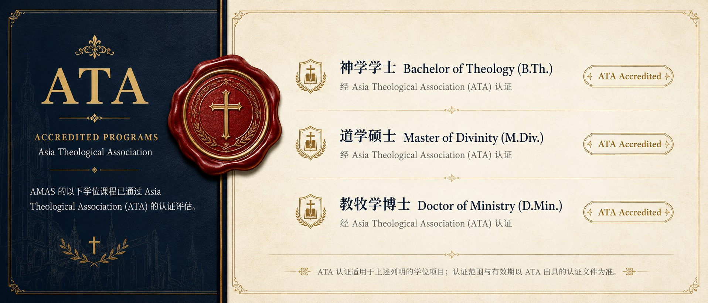

圣经为本
坚守圣经权威，深化真理根基，培养扎实的神学思考与属灵洞见。
你们要去，使万民作我的门徒。
我们致力于以圣经真理为根基，结合跨文化视野与实践训练，装备学生成为忠心的传道人、牧者与宣教工人，在教会与世界中活出福音，见证神的国度。
了解我们的异象与使命 →坚守圣经权威，深化真理根基，培养扎实的神学思考与属灵洞见。
理论与实践并重，课堂与事奉结合，装备学以致用的服侍能力。
放眼全球，跨文化装备，回应大使命的呼召。
注重属灵生命与品格塑造，成为合神心意的工人。
AMAS 的以下学位课程已通过 Asia Theological Association (ATA) 的认证评估。

ATA 认证适用于上述列明的学位项目；认证范围与有效期以 ATA 出具的认证文件为准。
我们把神学教育放回真实的教会、家庭、职场与宣教现场，让知识、生命与行动彼此连接。
建立可靠的圣经诠释与神学基础。
以属灵操练、群体关系与品格成长为核心。
把所学转化为讲道、牧养、门训与服事能力。
勇于传福音，并装备跨文化宣教的视野与能力。
按学院官方课程体系开设必修、选修与属灵训练，涵盖圣经、系统、历史、实践神学与圣经语言。
“你当竭力在神面前得蒙喜悦，作无愧的工人，按着正意分解真理的道。”— 提摩太后书 2:15
研读天国的信息，认识君王基督与门徒之道。
跟随仆人基督的脚踪，认识十架之路。
认识寻找失丧者的救主，与福音的普世性。
认识耶稣的身份与工作，因信祂的名得生命。
跟随初代教会的脚踪，看福音从耶路撒冷直到地极。
系统研读因信称义的福音大纲与新生命之道。
围绕教会秩序、十字架神学与群体建造研读书信。
在软弱中认识神的安慰、能力与事奉者的职分。
持守唯独恩典的福音，活出圣灵里的自由。
认识教会作为基督身体的奥秘与在基督里的新生活。
在患难中以基督为至宝，学习喜乐与谦卑。
认识基督的至高与丰盛，胜过一切虚假哲学。
在盼望主再来的光中，过圣洁与彼此相爱的生活。
辨明末世教导，在患难中站立得稳、殷勤作工。
学习教会的治理、职分与纯正教义的持守。
从保罗的遗言学习忠心到底、传承福音。
建立健全的教会与合乎纯正教义的生活。
在一封短信中看见福音如何更新人际关系。
仰望更美的大祭司基督，持定所承认的指望。
信心必有行为：智慧、言语与日常敬虔的操练。
作寄居的圣洁子民，在苦难中盼望荣耀。
在真知识中长进，警醒防备假师傅。
在光明、真理与爱中确知自己有永生。
在真理中行事相爱，谨防迷惑人的教导。
学习接待、同工与效法良善的榜样。
为一次交付圣徒的真道竭力争辩。
从启示文学认识终末盼望与教会的得胜。
从起初认识创造、堕落与救赎的开端。
在各人任意而行的时代，看见神信实的拯救。
纵览全本圣经的结构、脉络与救赎主线。
借地理场景读懂圣经叙事。
以标记与归纳的方法，建立稳固的个人研经习惯。
面向平信徒的教义总览，建立信仰框架。
把握福音派信仰的核心教义与立场。
在亚洲处境中忠于圣经地思考、表达与实践信仰。
以圣经原则建构教会与家庭的信仰教育。
认识改革宗传统与福音派神学的渊源与异同。
梳理中国教会的信仰传承与神学根基。
以圣经原则回应当代伦理议题。
辨析各样世界观，建立圣经的眼光。
认识主要宗教，持定福音的独特。
认识伊斯兰信仰与向穆斯林传福音。
辨识异端邪说，持守纯正信仰。
以系统方式陪伴初信者扎根信仰、融入教会。
编写与使用初信栽培教材的实务。
在日常生活中操练信仰、敬虔与见证。
建立救恩确据，活出稳固而有盼望的信仰根基。
以门徒的身份跟随基督，建立稳定的生命节奏。
建立满有能力的祷告与稳定的灵修节奏。
认识崇拜的圣经意义与礼拜程序的安排。
建立、带领与倍增健康的小组群体。
掌握传福音的信息、方法与陪谈跟进之道。
认识属灵争战的圣经原则，穿戴神所赐的全副军装。
学习以神的话语宣告、代祷并牧养病痛中的人。
在真理与圣灵里经历内心创伤的医治与释放。
从释经到信息构成，学习忠实清晰的讲道。
在实际讲台操练中打磨讲道能力。
学习带领会众敬拜赞美的原则与技巧。
学习倾听、辅导与属灵陪伴的基本功。
从治理、同工配搭到事工规划的教会运营实务。
儿童与青少年主日学的理念与实务。
认识圣经背景中的以色列历史与文化。
纵览两千年教会的历程与属灵传承。
回顾福音入华与中国教会的成长之路。
学习新约希腊文基础，直读原文经文。
掌握旧约希伯来文的入门要素。
善用 AI 工具辅助讲章预备、牧养与事工管理。
以下 11 项实践训练由学校检查认定；不计入毕业学分，未完成不影响毕业。
学分制 · 按科修读、按科缴费：从证书课程到博士研究，修满学分即可毕业；2026 届 B.Th 招生已开放，其余项目已开放，如若了解，可更多咨询。
学分制逐科修读，修满规定学分即毕业；学籍由 AMAS 总校审核建立
面向在职牧者与平信徒的短期训练
各项目的开课批次、修读年限与申请条件，请通过「申请入学」或联系方式咨询招生同工。
为愿意认真装备、持续成长并参与服事的人提供灵活、实践导向的神学教育路径。
“来跟从我，我要叫你们得人如得鱼一样。”— 马太福音 4:19
让愿意接受装备的人，都有继续学习的道路。
AMAS 采用按科修读、按科缴费的方式。学员根据自己的学习进度选修课程，不需要一次承担整学期或整学年的费用，让学习安排更加灵活，也减轻一次性经济压力。具体课程费用，请亲自向招生同工咨询了解。
我们相信，神学装备需要学员认真投入，也需要学校、教师与服事团队共同承担教学成本。因此，正常缴纳课程费用，是对学习的委身，也是对教学事工的支持。
"人若有愿作的心，必蒙悦纳，乃是照他所有的，并不是照他所无的。"
—— 哥林多后书 8:12
因此，经济上的困难不应成为一个人接受神学装备的拦阻。对于确有经济困难、但愿意认真学习并接受装备的学员，可以主动向招生或教务同工说明实际情况，学校会根据个人情况，提供适当的学费减免、分期缴费或其他学习支持方案。
我们的原则不是简单地"降低学费"，而是希望每一位真正愿意学习的人，都能够找到一条可以继续装备的道路。
"在道理上受教的，当把一切需用的供给施教的人。"
—— 加拉太书 6:6
AMAS 盼望建立健康的学习文化：有能力的学员正常承担学费；有困难的学员可以获得帮助；有余力的人也可以通过奉献支持其他学员接受装备。
“各人要随本心所酌定的，不要作难，不要勉强，因为捐得乐意的人是神所喜爱的。”—— 哥林多后书 9:7
神学教育是一场同工的事奉。你的奉献将帮助愿意受装备的学员走完学习的路，也支持教学与宣教事工继续前行。
奉献完全出于自愿，用于学员助学、教学与宣教事工；如需了解奉献的使用情况，欢迎随时与我们联系。
课堂、门训、小组、教会服事与真实生活共同构成神学教育。
“铁磨铁，磨出刃来；朋友相感也是如此。”— 箴言 27:17
课程之外，重视生命陪伴与方向辨识。
透过讨论、案例与彼此回应深化学习。
把所学带入教会、家庭、职场与宣教现场。
在敬拜与祷告中扎根，生命先于事奉。
学院正在建设自己的学习平台，把课程、资源与群体连接在同一个入口。
“你的话是我脚前的灯，是我路上的光。”— 诗篇 119:105
"不是每个人都需要从同一课开始。"
AI 将根据你的信仰、圣经、神学、生命与服事处境进行对话式评估，生成你的神学成长画像，并为你设计专属的装备路径——学习中持续评估、动态调整，直到差遣你进入真实服事。
正在修读的课程、直播讲座与课后回放汇总到一个入口，适合移动端连续学习。
讲义、音频与研究资料在图书馆与课程资料页同步出现，减少来回查找。
讨论、代祷、导师反馈与语音房，让学习与群体生活彼此连接。
精选免费公开课先听为快，体验课堂再决定报读。
从证书课程到博士研究，阶梯式路径一目了然。
公告、答疑与招生咨询随时在手，同工及时回应。
开发中：学习 App 正在内部测试，正式发布后将在此提供下载入口。
“圣经都是神所默示的，于教训、督责、使人归正、教导人学义都是有益的。”— 提摩太后书 3:16
可以。我们更看重持续学习、遵守学习纪律与认真接受装备的意愿。
以灵活学习为原则，包含线上课程，同时鼓励参与清迈线下门训、实践与群体学习。
学籍由 AMAS 总校审核建立，并按学校正式制度完成毕业与学位流程。
点击“申请入学”，填写基础资料与学习动机，之后由招生同工联络并说明下一步。
欢迎以代祷参与，也可以为学员助学、教学与宣教事工奉献，详见「奉献支持」版块；把学院介绍给身边合适的人同样是宝贵的支持。
留下你的问题，我们会通过你提供的联系方式回复。
线上 + 清迈线下 · 按科修读 · 9 月开学。想先了解一下？招生助手随时为你解答。

自动应答基于本站信息；留言将转交招生同工回复。